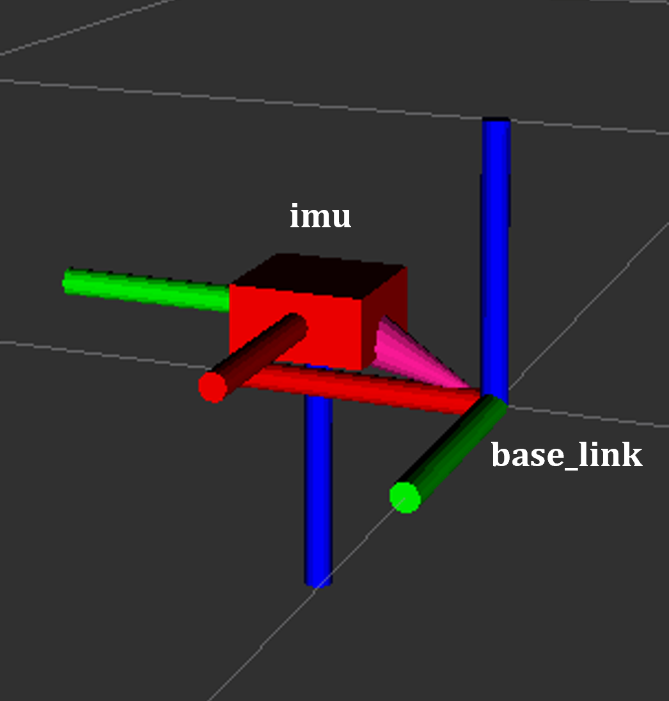

AD-R1M Software Guide
This guide covers software installation, configuration, and operation for the AD-R1M Open Mobile Robot Platform.
Overview
The AD-R1M software stack is built on ROS 2 Humble running on ADI Kuiper2 Linux. The architecture includes:
ROS 2 Nodes for motor control, sensor integration, localization, and navigation
ros2_control framework for hardware abstraction
Nav2 navigation stack for autonomous operation
Docker containers for isolated, reproducible deployments
Software Downloads
AD-R1M Software Package
The AD-R1M ROS 2 packages are available on GitHub:
Prerequisites
On the Robot (Raspberry Pi 5):
ADI Kuiper2 Linux (pre-installed on SD card)
ROS 2 Humble (pre-installed)
Docker and Docker Compose (pre-installed)
On the Host PC (for development/visualization):
Ubuntu 22.04 LTS
ROS 2 Humble Desktop
RViz2 for visualization
For host PC setup instructions, see Host PC ROS 2 Installation.
Installation
SD Card Setup
For instructions on setting up the SD card and installing the AD-R1M system software, see How to set up the AD-R1M internal computer.
First Boot Configuration
The AD-R1M includes an interactive setup script to configure the robot on first boot.
Connect a monitor and keyboard to the Raspberry Pi (or use serial console)
Login with default credentials:
Username:
analogPassword:
analog
Run the interactive setup script:
~/setup.sh
The script provides a menu-driven interface:
╔════════════════════════════════════════════════════════════════╗ ║ AD-R1M First Boot Setup Menu ║ ╠════════════════════════════════════════════════════════════════╣ ║ 1) Change hostname ║ ║ Set a unique hostname for the robot ║ ║ (recommended for multi-robot setups) ║ ║ ║ ║ 2) Connect to WiFi ║ ║ Opens nmtui for network configuration ║ ║ ║ ║ 3) Download latest docker image ║ ║ Pulls the latest AD-R1M container from Cloudsmith ║ ║ ║ ║ 4) Write CAN adapter firmware ║ ║ Uploads firmware to the ADRD4161 CAN adapter board ║ ║ ║ ║ 5) Write default motor tuning ║ ║ Writes PID parameters to motor controllers (ADRD3161) ║ ║ ║ ║ 6) Bind radio receiver ║ ║ Puts the ELRS receiver into bind mode ║ ║ ║ ║ 0) Exit ║ ╚════════════════════════════════════════════════════════════════╝
Complete the recommended setup steps in order:
a) Change hostname (e.g.,
ad-r1m-0,ad-r1m-1)b) Connect to WiFi and note the IP address shown after connection
c) Download latest docker image (requires Cloudsmith login)
d) Write CAN adapter firmware (required for motor control)
e) Write default motor tuning (required for proper motor operation)
f) Bind radio receiver (optional, only if using RC control)
Verify SSH access from your host PC:
ssh analog@<robot-ip-address>
Docker Setup
The AD-R1M software runs in Docker containers for isolation and reproducibility.
Verify Docker is running:
sudo systemctl status docker
docker ps
Pull the latest AD-R1M container:
# Option 1: Use the recreate script (recommended)
~/recreate_container.sh
# Option 2: Manual pull and tag
IMAGE=docker.cloudsmith.io/adi/adrd-common/ad-r1m:rpi5-ftc2025
docker pull $IMAGE
docker tag $IMAGE working
Software Operation
For basic operation (power on, SSH, bringup), see the quick-start-guide.
Bringup Configuration
The bringup.sh script accepts environment variables to configure the robot stack:
Variable |
Default |
Options |
|---|---|---|
|
|
|
|
|
|
|
|
|
|
(none) |
(empty) or |
|
hostname-based |
e.g., |
Example configurations:
# Manual radio control (default)
~/bringup_radio.sh
# Equivalent to: TELEOP=radio LOCALIZATION=blind ~/bringup.sh
# Autonomous navigation with AMCL
~/bringup_amcl.sh
# Equivalent to: TELEOP=radio LOCALIZATION=amcl NAVIGATION=nav2 ~/bringup.sh
# Custom configuration
TELEOP=keyboard LOCALIZATION=amcl NAVIGATION=nav2 ~/bringup.sh
For the complete list of bringup scripts, see Alternative Bringup Scripts in the Quick Start Guide.
Starting Services Manually
Start specific Docker Compose profiles:
cd ~/ros2_ws
# Basic robot with radio control
docker compose --profile rmw_zenoh --profile teleop_radio --profile localization_blind up
# With navigation
docker compose --profile rmw_zenoh --profile teleop_radio --profile localization_amcl --profile navigation_nav2 up
# Mapping mode
docker compose --profile rmw_zenoh --profile teleop_radio --profile mapping up
Start individual services:
docker compose up motors # Just motors
docker compose up motors imu # Motors and IMU
Verifying Operation
Check running containers:
docker ps
Access a running container:
docker exec -it ad-r1m-motors-1 bash
source /opt/ros/humble/setup.bash
source /ros2_ws/install/setup.bash
Verify ROS 2 nodes:
ros2 node list
Expected nodes include:
/<namespace>/controller_manager/<namespace>/diff_drive_controller/<namespace>/imu_node/<namespace>/tof_camera_node
RViz Visualization
For RViz setup on your host PC, see RViz Visualization.
Docker Compose Architecture
The system uses Docker Compose with profiles for modular service management.
Always-On Services
These services start with every bringup configuration:
Service |
Function |
Key Details |
|---|---|---|
|
Motor control via CANopen |
Requires |
|
ADIS16470 IMU sensor |
Requires |
|
ADTF3175D ToF camera |
Depth image publisher |
|
Topic relay |
Republishes to namespaced topics |
Profile-Based Services
Service |
Profile |
Function |
|---|---|---|
|
|
Zenoh middleware router |
|
|
Fast-DDS discovery server |
|
|
CRSF/ELRS radio control |
|
|
Keyboard teleop |
|
|
SLAM Toolbox |
|
|
Dead reckoning (static TF) |
|
|
AMCL localization |
|
|
Serves static maps |
|
|
Nav2 navigation stack |
Volume Mounts
Configuration and map data stored on host:
/home/analog/ros_data:/ros_dataMaps:
/ros_data/maps/Parameters:
/ros_data/navigation_params.yaml,/ros_data/mapping_params.yaml
ROS 2 Components
For detailed ROS 2 architecture documentation, see software-guide/ros2-architecture.
IMU (ADIS16470)
Topics:
/${NAMESPACE}/imu(sensor_msgs/Imu)Interface: IIO (Industrial I/O)
Frequency: 200 Hz (default), configurable up to 2000 Hz
{kind=link}

ToF Camera (ADTF3175D)
Topics:
/cam1/depth_image(16UC1),/${NAMESPACE}/cam1/scan(LaserScan)Interface: USB via ADI ToF SDK
Function: Depth images converted to 2D LaserScan for navigation

Motor Control (CANopen)
Topics: Subscribes to
cmd_vel, publishesodomInterface: CANopen via
slcan0Framework: ros2_control with differential drive controller
CRSF Remote Control
Topics:
/${NAMESPACE}/cmd_vel_joy,/${NAMESPACE}/killswitchDevice:
/dev/ttyCRSFChannels: Right stick for motion, SA switch for killswitch
Development and Debugging
Viewing Logs
# All services
docker compose logs -f
# Specific service
docker compose logs -f motors
# With timestamps
docker compose logs -f --timestamps motors
Restart Services
docker compose restart motors
docker compose restart imu tof
Interactive Container
# Start interactive session
docker compose run --rm motors bash
# Access running container
docker exec -it ad-r1m-motors-1 bash
For troubleshooting common issues, see AD-R1M Troubleshooting.
Detailed Guides
See also
AD-R1M ROS 2 Getting Started - Getting started with ROS 2 on the AD-R1M
AD-R1M ROS2 Examples - ROS 2 example applications
AD-R1M ROS2 Architecture - ROS 2 software architecture